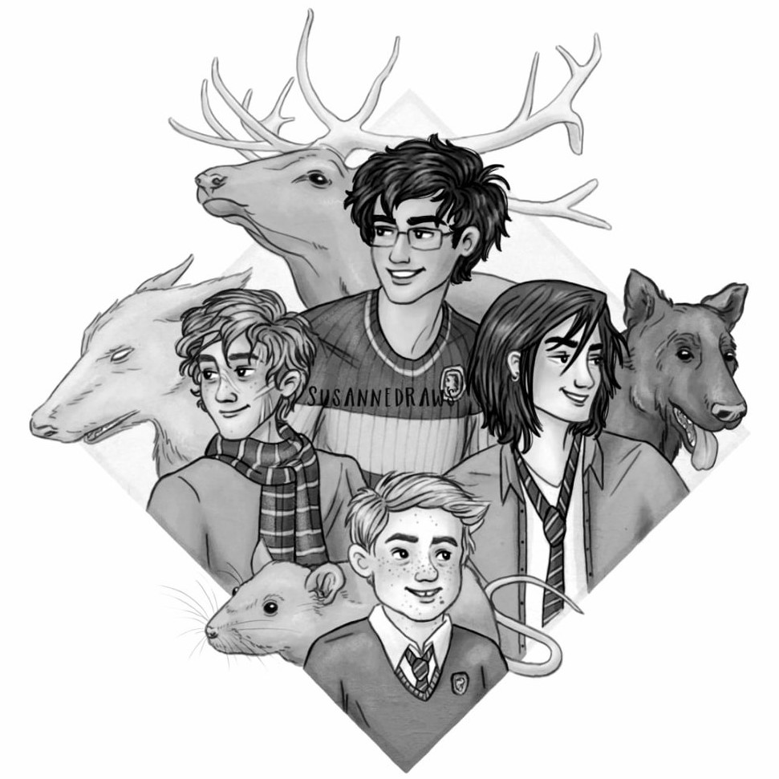
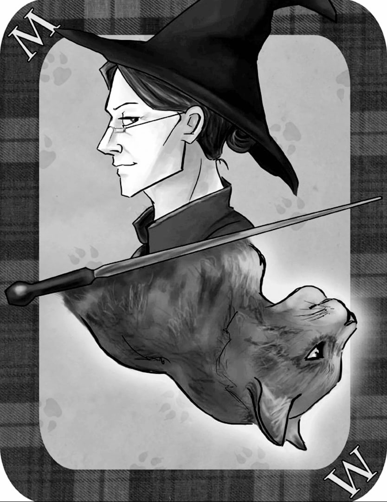

Уже ни для кого не секрет, что знаменитые в своё время Мародёры, как истинные гриффиндорцы сумели самостоятельно, нарушив все правила стать незарегистрированными анимагами. Чтобы избежать подобных инцидентов, министерство пришло к решению о введении дополнительного курса, для желажщих освоить эту науку.
Анимаг - (от лат. animal — животное и magus — маг) — это ведьма или волшебник, способный по желанию превратиться в некое животное. Пребывающий в животной форме по большей части сохраняет способности к человеческому мышлению, осознание своего Я и свои воспоминания. Также анимаг сохраняет нормальную человеческую продолжительность жизни, даже если надолго принимает свою животную форму. Тем не менее, чувства и эмоции упрощаются и у анимага появляется много животных устремлений, например, питаться вместо человеческой еды тем, чего жаждет их животное тело.
Анимаг имеет большое потенциальное преимущество в сфере шпионажа и преступности. По каковой причине существует Реестр Анимагов, в котором, по теории, все анимаги должны указать свои личные данные и точное описание внешнего вида своей трансформы. Обычно в облике животного отражаются отличительные признаки или увечья человеческого тела. Отказ от внесения своих данных в Реестр может привести к заключению в Азкабан.
Если процесс становления анимагом протекает не как должно, это зачастую приводит к серьезным последствиям. Нетерпеливость в долгом и сложном процессе как правило приводит ко всяческим бедам, которые обычно принимают форму мутаций, создавая пугающих полулюдей, полуживотных. В случае таких ошибок не существует никакого известного лечения, и совершающие их зачастую вынуждены доживать свои дни в столько жалком виде, будучи не в состоянии стать полноценным животным или человеком.
Для превращения в анимага необходимо иметь талант и в трансфигурации, и в зельях. Данная инструкция не предполагает ни малейшей возможности делегировать любую физическую или психическую обязанность.
1. На протяжении целого месяца (от полнолуния до полнолуния) во рту должен находиться лист мандрагоры. Лист нельзя глотать или хотя бы раз вынимать изо рта. Если лист убран изо рта, процесс необходимо начать сначала.
2. В полнолуние вынуть лист и поместить его в небольшой, наполненный слюной хрустальный фиал, поставив его под прямой лунный свет (если ночь выдастся облачной, придётся найти новый лист мандрагоры и начать всё сначала). В напитанный лунным светом хрустальный фиал добавить собственный волос, серебряную чайную ложку росы, собранной в месте, которого в течение семи дней не касались ни солнечный свет, ни человеческие ноги, и куколку бабочки «мёртвая голова». Поместить эту смесь в тихое тёмное место, и до ближайшей грозы на неё нельзя ни смотреть, ни беспокоить каким-либо иным образом.
3. В ожидании грозы, на восходе и на закате необходимо выполнять следующую процедуру. Поместить кончик палочки напротив сердца и произнести следующее заклинание: «Amato Animo Animato Animagus».
4. Ожидание грозы может затянуться на несколько недель, месяцев или даже лет. В течение этого времени хрустальный фиал должен оставаться совершенно нетронутым и не подвергаться прикосновениям солнечного света. Поражение солнечным светом приведёт к наихудшим мутациям. Не поддавайтесь искушению посмотреть на своё зелье, пока не сверкнёт молния. Если продолжать повторять своё заклинание на рассвете и на закате, наступит момент, когда, прикасаясь кончиком палочки к груди, можно ощутить, что второй удар сердца становится порой сильнее, а порой слабее первого. Ничего нельзя менять. Заклятие обязательно необходимо произносить в нужное время, не пропуская ни одного раза.
5. Сразу же после вспышки молнии в небе идём туда, где спрятан хрустальный фиал. Если все предыдущие шаги выполнены верно, внутри обнаружится глоток кроваво-красного зелья.
6. Важно сразу же отправиться в просторное безопасное место, где трансформация не вызовет тревоги и не создаст для вас физической опасности. Нужно расположить кончик палочки напротив сердца, произнести заклинание: «Amato Animo Animato Animagus», а затем выпить зелье.
7. Если всё прошло правильно, появится ощущение обжигающей боли и сильного двойного сердцебиения. В голове появится форма существа, в которое в скором времени доведётся превратиться. Не следует выказывать ни малейшего страха. Уже слишком поздно, чтобы избежать вызванных изменений.
8. Первая трансформация, как правило, неудобна и пугающа. Одежда и вещи, такие как очки или драгоценности, сливаются с кожей и становятся единым целым с мехом, чешуёй или шипами. Не надо сопротивляться и паниковать, иначе разум животного может возобладать и реально совершить какую-нибудь глупость, например, попытаться сбежать через окно или врезаться в стену.
9. После завершения трансформации необходимо позаботиться о физических удобствах. Настоятельно рекомендуется немедленно забрать свою палочку и спрятать там, где её можно будет найти, когда потребуется вновь обрести человеческую форму.
10. Для того, чтобы вернуться к человеческой форме, необходимо максимально точно визуализировать свой человеческий вид. Этого должно быть достаточно, но не стоит паниковать, если не произойдёт немедленной трансформации. С практикой придёт возможность по желанию принимать и сбрасывать животную форму, просто визуализируя существо. Опытные анимаги способны трансформироваться без волшебных палочек. Чаще всего волшебники предпочитают, чтобы их одежда превращалась вместе с ними, дабы избежать неловкого обнажения. Тем не менее, желающий может сбросить одежду, в качестве предлога уйдя в ванную или нечто в этом роде. Чем дольше ведьма или волшебник практикует анимагию, тем точнее происходит выбор конкретной формы трансформации.
Вроде бы животное, в которое превращается анимаг, так же становится его патронусом. Неизвестно ни одного случая, чтобы анимагическая форма менялась, подстраиваясь под патронус, если менялся последний, но, с другой стороны, анимаг, так же способный вызвать патронуса, весьма необычен сам по себе, и никогда не проводилось должных исследований, чтобы можно было сделать окончательные выводы.
Законопослушных, зарегистрированных в министерстве анимагов немного. За весь двадцатый век их набралось только семь. Названа только одна волшебница-анимаг, Минерва МакГонагалл, которая превращается в кошку.